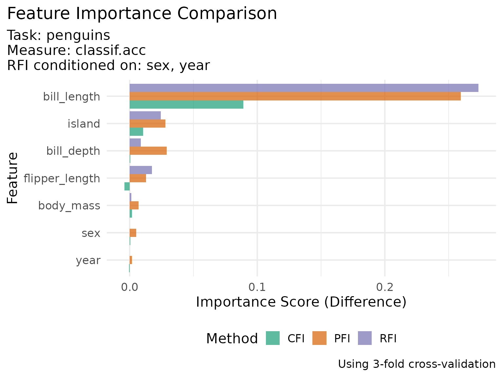
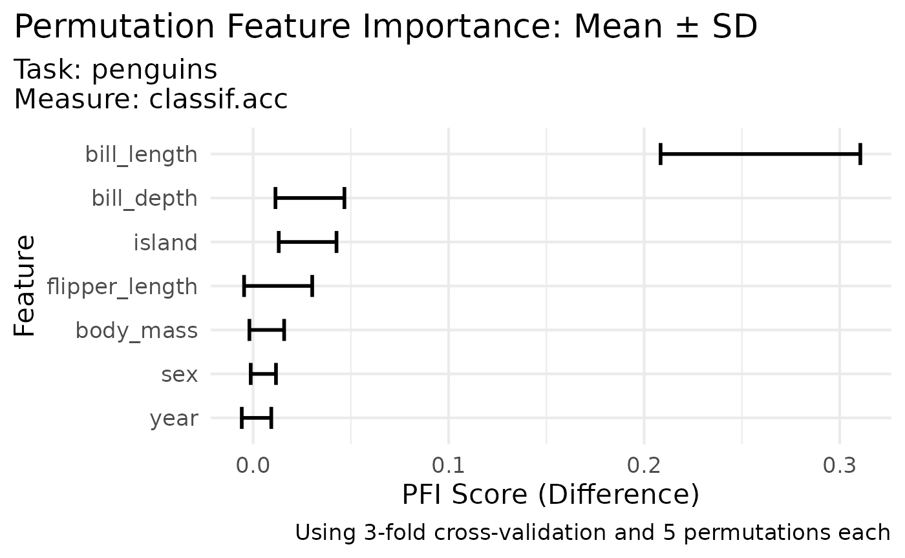

Perturbation-based Feature Importance Methods
Source:vignettes/perturbation-importance.Rmd
perturbation-importance.Rmd
library(xplainfi)
# learners, tasks, etc.
library(mlr3)
library(mlr3data) # penguins_simple
library(mlr3learners) # ranger
library(data.table)This vignette demonstrates the three perturbation-based feature importance methods implemented in xplainfi:
- PFI (Permutation Feature Importance): Uses marginal sampling (simple permutation)
- CFI (Conditional Feature Importance): Uses conditional sampling via Adversarial Random Forests
- RFI (Relative Feature Importance): Uses conditional sampling on a user-specified subset of features
Problem Setup
We’ll use the penguins_simple dataset to compare these
methods:
task <- tsk("penguins")
learner <- lrn("classif.ranger", num.trees = 100, num.threads = 2)
resampling <- rsmp("cv", folds = 3)
measure <- msr("classif.acc")
# Show the task structure
task
#> <TaskClassif:penguins> (344 x 8): Palmer Penguins
#> * Target: species
#> * Properties: multiclass
#> * Features (7):
#> - int (3): body_mass, flipper_length, year
#> - dbl (2): bill_depth, bill_length
#> - fct (2): island, sexPermutation Feature Importance (PFI)
PFI shuffles each feature independently, breaking the association between the feature and the target while preserving the marginal distribution.
For more stable results, we
- Use 3-fold CV for more reliable performance estimates
- Within each resampling iteration, we repeat the
permutation-prediction-scoring step
iters_permtimes
- Within each resampling iteration, we repeat the
permutation-prediction-scoring step
pfi <- PFI$new(
task = task,
learner = learner,
measure = measure,
resampling = resampling,
iters_perm = 5
)
# Compute importance scores
pfi_results <- pfi$compute(relation = "difference")
pfi_results
#> Key: <feature>
#> feature importance
#> <char> <num>
#> 1: bill_depth 0.029077040
#> 2: bill_length 0.259471142
#> 3: body_mass 0.007002288
#> 4: flipper_length 0.012819730
#> 5: island 0.027897279
#> 6: sex 0.005252988
#> 7: year 0.001764556
# Also stored in
pfi$importance
#> Key: <feature>
#> feature importance
#> <char> <num>
#> 1: bill_depth 0.029077040
#> 2: bill_length 0.259471142
#> 3: body_mass 0.007002288
#> 4: flipper_length 0.012819730
#> 5: island 0.027897279
#> 6: sex 0.005252988
#> 7: year 0.001764556
# Scores per resampling iteration and permutation iteration
pfi$scores |>
knitr::kable(digits = 4)| feature | iter_rsmp | iter_perm | classif.acc_orig | classif.acc_perm | importance |
|---|---|---|---|---|---|
| bill_depth | 1 | 1 | 0.9565 | 0.9217 | 0.0348 |
| bill_depth | 1 | 2 | 0.9565 | 0.8870 | 0.0696 |
| bill_depth | 1 | 3 | 0.9565 | 0.9130 | 0.0435 |
| bill_depth | 1 | 4 | 0.9565 | 0.9217 | 0.0348 |
| bill_depth | 1 | 5 | 0.9565 | 0.9217 | 0.0348 |
| bill_depth | 2 | 1 | 0.9826 | 0.9652 | 0.0174 |
| bill_depth | 2 | 2 | 0.9826 | 0.9652 | 0.0174 |
| bill_depth | 2 | 3 | 0.9826 | 0.9739 | 0.0087 |
| bill_depth | 2 | 4 | 0.9826 | 0.9826 | 0.0000 |
| bill_depth | 2 | 5 | 0.9826 | 0.9652 | 0.0174 |
| bill_depth | 3 | 1 | 1.0000 | 0.9561 | 0.0439 |
| bill_depth | 3 | 2 | 1.0000 | 0.9825 | 0.0175 |
| bill_depth | 3 | 3 | 1.0000 | 0.9649 | 0.0351 |
| bill_depth | 3 | 4 | 1.0000 | 0.9825 | 0.0175 |
| bill_depth | 3 | 5 | 1.0000 | 0.9561 | 0.0439 |
| bill_length | 1 | 1 | 0.9565 | 0.7304 | 0.2261 |
| bill_length | 1 | 2 | 0.9565 | 0.7217 | 0.2348 |
| bill_length | 1 | 3 | 0.9565 | 0.7391 | 0.2174 |
| bill_length | 1 | 4 | 0.9565 | 0.7304 | 0.2261 |
| bill_length | 1 | 5 | 0.9565 | 0.6957 | 0.2609 |
| bill_length | 2 | 1 | 0.9826 | 0.7043 | 0.2783 |
| bill_length | 2 | 2 | 0.9826 | 0.8000 | 0.1826 |
| bill_length | 2 | 3 | 0.9826 | 0.7565 | 0.2261 |
| bill_length | 2 | 4 | 0.9826 | 0.7652 | 0.2174 |
| bill_length | 2 | 5 | 0.9826 | 0.7478 | 0.2348 |
| bill_length | 3 | 1 | 1.0000 | 0.7018 | 0.2982 |
| bill_length | 3 | 2 | 1.0000 | 0.7281 | 0.2719 |
| bill_length | 3 | 3 | 1.0000 | 0.6667 | 0.3333 |
| bill_length | 3 | 4 | 1.0000 | 0.6316 | 0.3684 |
| bill_length | 3 | 5 | 1.0000 | 0.6842 | 0.3158 |
| body_mass | 1 | 1 | 0.9565 | 0.9478 | 0.0087 |
| body_mass | 1 | 2 | 0.9565 | 0.9565 | 0.0000 |
| body_mass | 1 | 3 | 0.9565 | 0.9391 | 0.0174 |
| body_mass | 1 | 4 | 0.9565 | 0.9565 | 0.0000 |
| body_mass | 1 | 5 | 0.9565 | 0.9565 | 0.0000 |
| body_mass | 2 | 1 | 0.9826 | 0.9826 | 0.0000 |
| body_mass | 2 | 2 | 0.9826 | 0.9826 | 0.0000 |
| body_mass | 2 | 3 | 0.9826 | 0.9826 | 0.0000 |
| body_mass | 2 | 4 | 0.9826 | 0.9826 | 0.0000 |
| body_mass | 2 | 5 | 0.9826 | 0.9826 | 0.0000 |
| body_mass | 3 | 1 | 1.0000 | 0.9912 | 0.0088 |
| body_mass | 3 | 2 | 1.0000 | 0.9825 | 0.0175 |
| body_mass | 3 | 3 | 1.0000 | 0.9737 | 0.0263 |
| body_mass | 3 | 4 | 1.0000 | 0.9825 | 0.0175 |
| body_mass | 3 | 5 | 1.0000 | 0.9912 | 0.0088 |
| flipper_length | 1 | 1 | 0.9565 | 0.9565 | 0.0000 |
| flipper_length | 1 | 2 | 0.9565 | 0.9217 | 0.0348 |
| flipper_length | 1 | 3 | 0.9565 | 0.9304 | 0.0261 |
| flipper_length | 1 | 4 | 0.9565 | 0.9391 | 0.0174 |
| flipper_length | 1 | 5 | 0.9565 | 0.9304 | 0.0261 |
| flipper_length | 2 | 1 | 0.9826 | 0.9913 | -0.0087 |
| flipper_length | 2 | 2 | 0.9826 | 0.9826 | 0.0000 |
| flipper_length | 2 | 3 | 0.9826 | 1.0000 | -0.0174 |
| flipper_length | 2 | 4 | 0.9826 | 0.9826 | 0.0000 |
| flipper_length | 2 | 5 | 0.9826 | 0.9826 | 0.0000 |
| flipper_length | 3 | 1 | 1.0000 | 0.9561 | 0.0439 |
| flipper_length | 3 | 2 | 1.0000 | 0.9737 | 0.0263 |
| flipper_length | 3 | 3 | 1.0000 | 0.9912 | 0.0088 |
| flipper_length | 3 | 4 | 1.0000 | 0.9912 | 0.0088 |
| flipper_length | 3 | 5 | 1.0000 | 0.9737 | 0.0263 |
| island | 1 | 1 | 0.9565 | 0.9304 | 0.0261 |
| island | 1 | 2 | 0.9565 | 0.9391 | 0.0174 |
| island | 1 | 3 | 0.9565 | 0.9391 | 0.0174 |
| island | 1 | 4 | 0.9565 | 0.9391 | 0.0174 |
| island | 1 | 5 | 0.9565 | 0.9478 | 0.0087 |
| island | 2 | 1 | 0.9826 | 0.9391 | 0.0435 |
| island | 2 | 2 | 0.9826 | 0.9652 | 0.0174 |
| island | 2 | 3 | 0.9826 | 0.9391 | 0.0435 |
| island | 2 | 4 | 0.9826 | 0.9391 | 0.0435 |
| island | 2 | 5 | 0.9826 | 0.9217 | 0.0609 |
| island | 3 | 1 | 1.0000 | 0.9825 | 0.0175 |
| island | 3 | 2 | 1.0000 | 0.9825 | 0.0175 |
| island | 3 | 3 | 1.0000 | 0.9649 | 0.0351 |
| island | 3 | 4 | 1.0000 | 0.9825 | 0.0175 |
| island | 3 | 5 | 1.0000 | 0.9649 | 0.0351 |
| sex | 1 | 1 | 0.9565 | 0.9478 | 0.0087 |
| sex | 1 | 2 | 0.9565 | 0.9565 | 0.0000 |
| sex | 1 | 3 | 0.9565 | 0.9565 | 0.0000 |
| sex | 1 | 4 | 0.9565 | 0.9478 | 0.0087 |
| sex | 1 | 5 | 0.9565 | 0.9565 | 0.0000 |
| sex | 2 | 1 | 0.9826 | 0.9826 | 0.0000 |
| sex | 2 | 2 | 0.9826 | 0.9826 | 0.0000 |
| sex | 2 | 3 | 0.9826 | 0.9826 | 0.0000 |
| sex | 2 | 4 | 0.9826 | 0.9826 | 0.0000 |
| sex | 2 | 5 | 0.9826 | 0.9826 | 0.0000 |
| sex | 3 | 1 | 1.0000 | 0.9825 | 0.0175 |
| sex | 3 | 2 | 1.0000 | 0.9912 | 0.0088 |
| sex | 3 | 3 | 1.0000 | 0.9912 | 0.0088 |
| sex | 3 | 4 | 1.0000 | 0.9912 | 0.0088 |
| sex | 3 | 5 | 1.0000 | 0.9825 | 0.0175 |
| year | 1 | 1 | 0.9565 | 0.9565 | 0.0000 |
| year | 1 | 2 | 0.9565 | 0.9565 | 0.0000 |
| year | 1 | 3 | 0.9565 | 0.9565 | 0.0000 |
| year | 1 | 4 | 0.9565 | 0.9565 | 0.0000 |
| year | 1 | 5 | 0.9565 | 0.9565 | 0.0000 |
| year | 2 | 1 | 0.9826 | 0.9826 | 0.0000 |
| year | 2 | 2 | 0.9826 | 0.9913 | -0.0087 |
| year | 2 | 3 | 0.9826 | 0.9826 | 0.0000 |
| year | 2 | 4 | 0.9826 | 0.9826 | 0.0000 |
| year | 2 | 5 | 0.9826 | 0.9913 | -0.0087 |
| year | 3 | 1 | 1.0000 | 0.9825 | 0.0175 |
| year | 3 | 2 | 1.0000 | 1.0000 | 0.0000 |
| year | 3 | 3 | 1.0000 | 0.9912 | 0.0088 |
| year | 3 | 4 | 1.0000 | 0.9825 | 0.0175 |
| year | 3 | 5 | 1.0000 | 1.0000 | 0.0000 |
Conditional Feature Importance (CFI)
CFI uses conditional sampling to preserve the joint distribution of
all other features when perturbing a feature of interest. By default we
use Adversarial Random Forests (ARF) as conditional sampler internally,
but it can be provided explicity, as we usually want to supply
additional arguments to arf::adversarial_rf() or
arf::forde().
sampler = ARFSampler$new(
task = task,
arf_args = list(verbose = FALSE, parallel = FALSE),
forde_args = list(finite_bounds = "no")
)
#> Warning: executing %dopar% sequentially: no parallel backend registered
# Example sampling for 5 randomly chosen rows from the task
sampler$sample(
feature = "bill_length",
data = task$data(rows = sample(task$nrow, size = 5)),
conditioning_features = "body_mass"
)
#> species bill_depth bill_length body_mass flipper_length island sex
#> <fctr> <num> <num> <int> <int> <fctr> <fctr>
#> 1: Adelie 19.7 43.3 4400 196 Dream male
#> 2: Gentoo 14.2 43.7 4600 209 Biscoe female
#> 3: Adelie 17.8 34.8 3450 195 Dream female
#> 4: Chinstrap 19.0 52.4 3950 201 Dream male
#> 5: Adelie 18.0 38.3 3150 182 Dream female
#> year
#> <int>
#> 1: 2007
#> 2: 2008
#> 3: 2009
#> 4: 2009
#> 5: 2007
cfi <- CFI$new(
task = task,
learner = learner,
measure = measure,
resampling = resampling,
iters_perm = 5,
sampler = sampler
)
# Compute importance scores
cfi_results <- cfi$compute(relation = "difference")
cfi_results
#> Key: <feature>
#> feature importance
#> <char> <num>
#> 1: bill_depth 0.0005949657
#> 2: bill_length 0.0889905924
#> 3: body_mass 0.0017543860
#> 4: flipper_length -0.0040579710
#> 5: island 0.0104907196
#> 6: sex 0.0005847953
#> 7: year -0.0005797101Relative Feature Importance (RFI)
RFI conditions on a specific subset of features as opposed to just one as in CFI, measuring importance relative to those features.
conditioning_set <- c("sex", "year")
rfi <- RFI$new(
task = task,
learner = learner,
measure = measure,
resampling = resampling,
conditioning_set = conditioning_set,
iters_perm = 5,
sampler = sampler
)
# Compute importance scores
rfi_results <- rfi$compute(relation = "difference")
rfi_results
#> Key: <feature>
#> feature importance
#> <char> <num>
#> 1: bill_depth 0.008761759
#> 2: bill_length 0.273292652
#> 3: body_mass 0.001164505
#> 4: flipper_length 0.017437071
#> 5: island 0.024490211
#> 6: sex 0.000000000
#> 7: year 0.000000000Comparing Methods
Now let’s compare the results from all three methods:
# Combine results for comparison
comparison <- merge(
pfi_results[, .(feature, pfi = importance)],
cfi_results[, .(feature, cfi = importance)],
by = "feature"
)
comparison <- merge(
comparison,
rfi_results[, .(feature, rfi = importance)],
by = "feature"
)
comparison
#> Key: <feature>
#> feature pfi cfi rfi
#> <char> <num> <num> <num>
#> 1: bill_depth 0.029077040 0.0005949657 0.008761759
#> 2: bill_length 0.259471142 0.0889905924 0.273292652
#> 3: body_mass 0.007002288 0.0017543860 0.001164505
#> 4: flipper_length 0.012819730 -0.0040579710 0.017437071
#> 5: island 0.027897279 0.0104907196 0.024490211
#> 6: sex 0.005252988 0.0005847953 0.000000000
#> 7: year 0.001764556 -0.0005797101 0.000000000
comparison |>
knitr::kable(
digits = 4,
caption = "Feature Importance Comparison (Difference Scores)",
col.names = c("Feature", "PFI", "CFI", "RFI")
)| Feature | PFI | CFI | RFI |
|---|---|---|---|
| bill_depth | 0.0291 | 0.0006 | 0.0088 |
| bill_length | 0.2595 | 0.0890 | 0.2733 |
| body_mass | 0.0070 | 0.0018 | 0.0012 |
| flipper_length | 0.0128 | -0.0041 | 0.0174 |
| island | 0.0279 | 0.0105 | 0.0245 |
| sex | 0.0053 | 0.0006 | 0.0000 |
| year | 0.0018 | -0.0006 | 0.0000 |
Visualization
library(ggplot2)
# Reshape data for plotting
plot_data <- comparison |>
melt(
id.vars = "feature",
value.name = "importance",
variable.name = "method"
)
# Clean up method names
plot_data[, method := toupper(method)]
# Create the plot
ggplot(plot_data, aes(x = importance, y = reorder(feature, importance), fill = method)) +
geom_col(position = "dodge", alpha = 0.7) +
scale_fill_brewer(palette = "Dark2") +
labs(
title = "Feature Importance Comparison",
subtitle = glue::glue(
"Task: {task$id}
Measure: {measure$id}
RFI conditioned on: {paste(conditioning_set, collapse = ', ')}"),
x = "Importance Score (Difference)",
y = "Feature",
fill = "Method",
caption = glue::glue("Using {resampling$iters}-fold cross-validation")
) +
theme_minimal(base_size = 16) +
theme(
legend.position = "bottom",
plot.title.position = "plot"
)
Understanding the Differences
The three methods can yield different results because they make different assumptions:
PFI assumes features are independent and measures the marginal importance of each feature.
CFI preserves the conditional distribution when perturbing feature , providing a more realistic assessment when features are correlated.
RFI measures importance relative to a specific conditioning set, answering “what additional information does this feature provide beyond what we already know from features A, B, C?”
In our penguin example: - Features like bill dimensions and body mass are likely correlated - CFI accounts for these correlations when measuring importance - RFI shows which features add value beyond bill_length and flipper_length
Advanced Usage
Custom Samplers
You can also provide custom samplers for more control:
# Create a custom ARF sampler with specific parameters
custom_sampler <- ARFSampler$new(
task = task,
arf_args = list(num_trees = 50), # Fewer trees for faster computation
forde_args = list(finite_bounds = "local") # Avoid out of distribution samples
)
cfi_custom <- CFI$new(
task = task,
learner = learner,
measure = measure,
resampling = resampling,
sampler = custom_sampler
)Accessing Detailed Results
As mentioned, individual scores per resampling iteration and
permutation iteration are kept in $scores.
detailed_scores <- pfi$scores
head(detailed_scores)
#> Key: <feature, iter_rsmp>
#> feature iter_rsmp iter_perm classif.acc_orig classif.acc_perm importance
#> <char> <int> <int> <num> <num> <num>
#> 1: bill_depth 1 1 0.9565217 0.9217391 0.03478261
#> 2: bill_depth 1 2 0.9565217 0.8869565 0.06956522
#> 3: bill_depth 1 3 0.9565217 0.9130435 0.04347826
#> 4: bill_depth 1 4 0.9565217 0.9217391 0.03478261
#> 5: bill_depth 1 5 0.9565217 0.9217391 0.03478261
#> 6: bill_depth 2 1 0.9826087 0.9652174 0.01739130
# Summarize variability across iterations
score_summary <- detailed_scores[, .(
mean_importance = mean(importance),
sd_importance = sd(importance),
n_iterations = .N
), by = feature]
score_summary
#> Key: <feature>
#> feature mean_importance sd_importance n_iterations
#> <char> <num> <num> <int>
#> 1: bill_depth 0.029077040 0.017635396 15
#> 2: bill_length 0.259471142 0.051076252 15
#> 3: body_mass 0.007002288 0.008882485 15
#> 4: flipper_length 0.012819730 0.017420922 15
#> 5: island 0.027897279 0.014769513 15
#> 6: sex 0.005252988 0.006457193 15
#> 7: year 0.001764556 0.007545314 15
ggplot(score_summary, aes(
y = reorder(feature, mean_importance),
xmin = mean_importance - sd_importance,
xmax = mean_importance + sd_importance)
) +
geom_errorbarh(linewidth = 1, height = .5) +
labs(
title = "Permutation Feature Importance: Mean ± SD",
subtitle = glue::glue(
"Task: {task$id}
Measure: {measure$id}"),
x = "PFI Score (Difference)",
y = "Feature",
caption = glue::glue("Using {resampling$iters}-fold cross-validation and {pfi$param_set$values$iters_perm} permutations each")
) +
theme_minimal(base_size = 16) +
theme(
legend.position = "bottom",
plot.title.position = "plot"
)